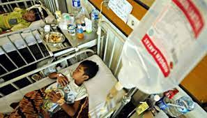

Pemanasan global memiliki dampak yang serius terhadap lingkungan, ekonomi, dan kesejahteraan manusia. Salah satu dampak paling mencolok adalah perubahan iklim yang ekstrem. Kenaikan suhu global telah menyebabkan cuaca yang lebih ekstrem, termasuk gelombang panas yang mematikan, badai lebih kuat, banjir, dan kekeringan yang parah. Ini mengakibatkan kerugian besar dalam hal kerusakan infrastruktur, hilangnya sumber daya alam, dan bahkan kehilangan nyawa manusia.
Selain itu, pemanasan global juga berdampak pada keseimbangan ekosistem. Perubahan iklim yang cepat mengancam keberlanjutan berbagai spesies tumbuhan dan hewan, dan banyak dari mereka menghadapi risiko kepunahan. Gangguan ekosistem ini dapat mengacaukan rantai makanan dan memengaruhi ketahanan pangan global. Perubahan suhu juga berdampak pada ekosistem laut, dengan memicu pemutihan karang yang merusak ekosistem terumbu karang yang penting.
Dampak pemanasan global sangat luas dan serius, dan mereka memengaruhi berbagai aspek kehidupan di planet ini. Beberapa dampak utama pemanasan global termasuk :8 Dampak Pemanasan Global
| Perubahan Iklim Ekstrem | Peningkatan suhu dunia menyebabkan perubahan dalam pola cuaca dan iklim. Ini dapat menyebabkan cuaca ekstrem seperti badai yang lebih kuat, banjir, kekeringan, dan gelombang panas yang lebih intens. Semua ini mengancam kehidupan manusia, satwa liar, dan ekosistem. |  |
| Penaikan Permukaan Laut | emanasan global menyebabkan es di kutub-kutub mencair, yang kemudian menyebabkan naiknya permukaan laut. Ini mengancam pulau-pulau kecil dan wilayah pesisir, serta menyebabkan erosi pantai yang serius. |  |
| Gangguan Ekosistem | Banyak spesies hewan dan tumbuhan tidak dapat beradaptasi dengan perubahan suhu yang cepat. Ini mengancam keanekaragaman hayati dan dapat menyebabkan kepunahan. |  |
| Gangguan Ketahanan Pangan | Perubahan iklim dapat mempengaruhi produksi pertanian dan ketersediaan makanan. Peningkatan suhu dapat mengurangi hasil panen dan menyebabkan kelaparan di berbagai wilayah. |  |
| Kesehatan Manusia | Gelombang panas yang lebih sering dan intens dapat mengancam kesehatan manusia, menyebabkan banyaknya kasus penyakit terkait panas dan bahkan kematian. |  |
| Kehilangan Sumber Daya Air | Perubahan iklim dapat mempengaruhi siklus air, mengakibatkan kekeringan yang lebih sering dan parah di beberapa wilayah dan banjir yang lebih parah di tempat lain. Ini mempengaruhi pasokan air bersih dan pertanian. |  |
| Ekonomi dan Infrastruktur | Bencana alam yang disebabkan oleh perubahan iklim dapat menyebabkan kerusakan infrastruktur dan biaya pemulihan yang tinggi. Ini juga dapat mempengaruhi perekonomian negara dan bisnis. |  |
| Konflik dan Migrasi | Kekeringan, kerusakan sumber daya alam, dan konflik terkait dengan perubahan iklim dapat memicu migrasi massal dan konflik atas sumber daya yang semakin terbatas. |  |